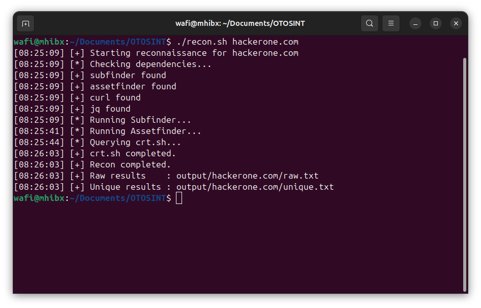
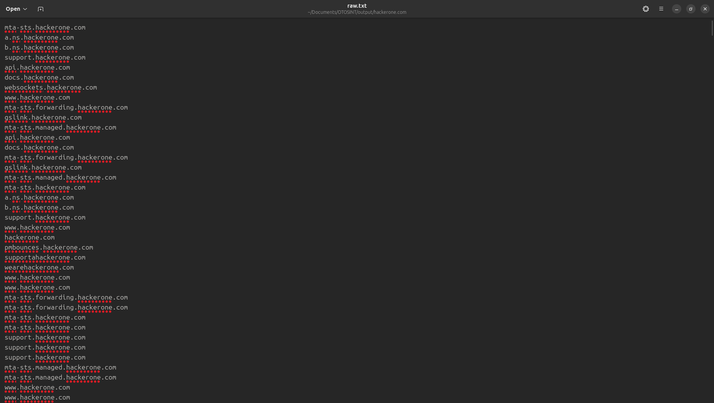
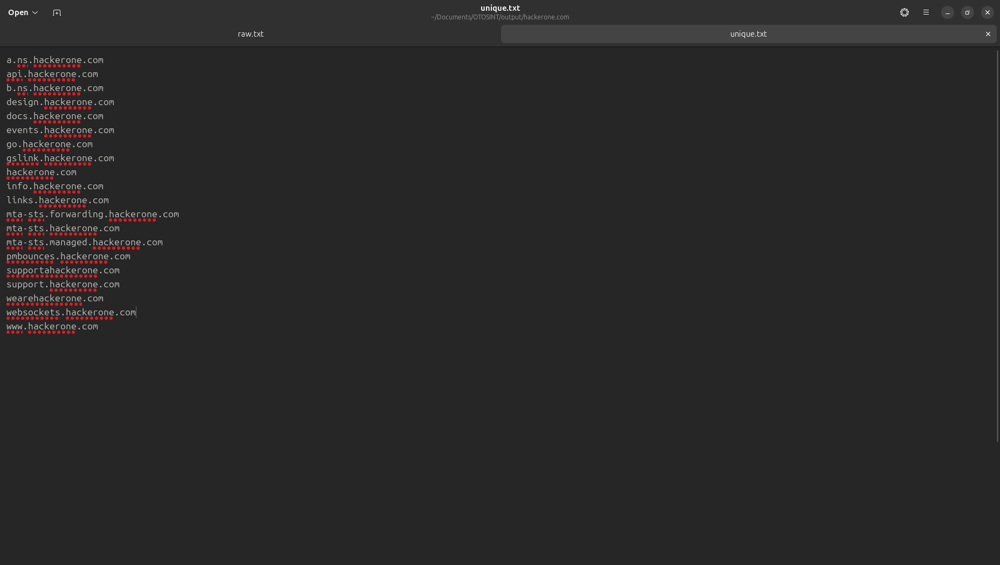

OtoSINT
OtoSINT is a modular OSINT reconnaissance framework
designed for bug bounty and attack surface discovery.
Features
- Subfinder integration
- Assetfinder integration
- crt.sh integration
- Automatic deduplication
- Dependency validation
- Structured output
Screenshots



Tools Used
- Subfinder
- Assetfinder
- crt.sh
- Bash